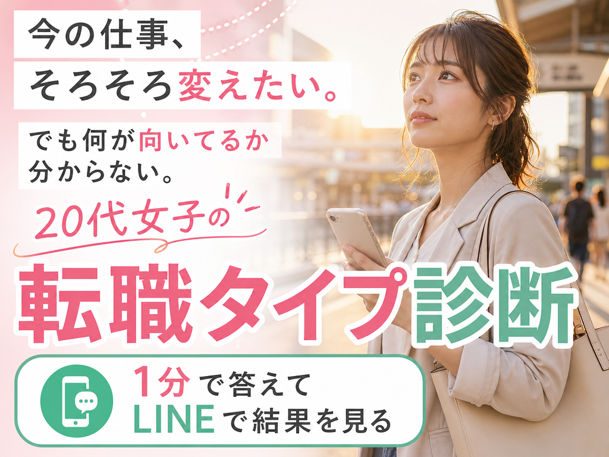
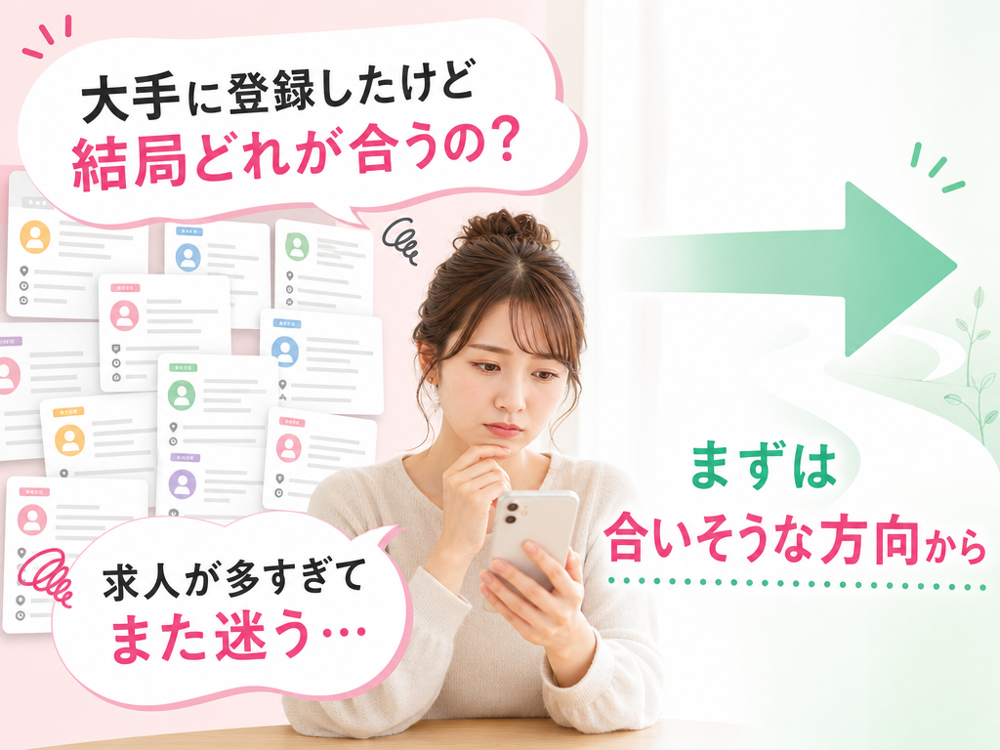
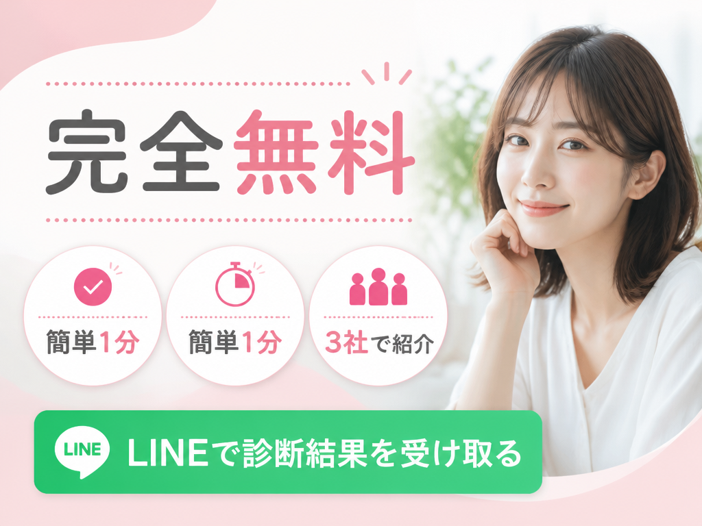

ちゃんと働いてるのに、なんかずっとしんどい
休みの日は寝て終わる。友達のストーリーを見ると、みんな普通に働いて、普通に遊んでるように見える。
こっちはシフト、給料日前、上司の機嫌、急な出勤。毎日行ってるだけでえらいのに、なぜか自信だけ減っていく。
給料日まで、服もネイルも予定も少しずつ我慢。
仕事のために生きてる感じがして、帰り道だけ急に泣きそうになる。
でも求人を見ても、どれが自分向きか分からない。「未経験OK」って書いてあるのに、自分が入っていい場所には見えない。
求人を見ても、自分に合うか分からない
「未経験OK」「若手活躍中」「アットホーム」
言葉はやさしいのに、どれも自分向けに見えない。応募ボタンを押す前に、職歴や面接のことを考えて閉じてしまう。

求人名だけで、向いてる仕事って分かりますか？
求人だけ見ても、「自分でも続けられるのか」は分からないですよね。
もし今、応募ボタンの前で止まってしまうなら、先に「私にはどんな仕事が合いそうか」を見ておく方が気持ちがラクだと思いませんか？
いきなり履歴書でも、いきなり面接でもなくて大丈夫。今の不安や希望を1分で選ぶだけで、LINEで仕事の方向を見られます。

大手に登録しても、選べないことってありませんか？
CMで見る大手が悪いわけじゃないんです。
ただ、やりたい仕事がまだ分からない時って、求人が多いほど迷ってしまいますよね。
はじめての転職で不安な状態なら、たくさん見せられるより先に「自分に合いそうな方向」を知りたくないですか？

バリバリじゃなくていい。普通に暮らしたいだけ
めちゃくちゃ稼ぎたいというより、普通に休みたい。予定を入れたい。美容も少し楽しみたい。
友達とのごはんで、毎回いちばん安いものを探したくない。仕事だけで毎日を終わらせたくない。
その前に、1分だけ診断してみる。
ひとりで決めなくていい。合いそうな方向が見えてきます
求人を見続けても、正解が分からない時ってありますよね。
この診断では、年齢や希望エリア、今の不安を選ぶだけで、合いそうな仕事の方向と転職サポートが分かります。
紹介されるのは最大3つ。多すぎてまた迷うより、まず見やすくしぼってもらえるのがうれしいところです。もちろん無料で使えます。

うまく説明できなくても大丈夫です
「何がしたいか分からない」のに、いきなり職務経歴書を書くのってしんどいですよね。
最初は、今近い気持ちを選ぶだけで大丈夫です。

結果はLINEに届くので、あとでゆっくり見返せます
その場で応募を決めるためのものではありません。
まずは「私にはどんな仕事が合いそうか」を知るために使えます。気持ちに余裕がある時に、LINEで見返せるのも安心です。

今日、辞めるって決めなくて大丈夫です
今の仕事を続けるか、変えるか。まだ決められなくても自然です。
でも、寝る前に求人を眺めて「結局どれ？」で終わりそうなら、今の気持ちだけ先に選んでおきませんか。LINEに残るので、元気な時にゆっくり見返せます。